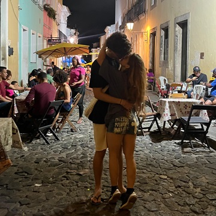
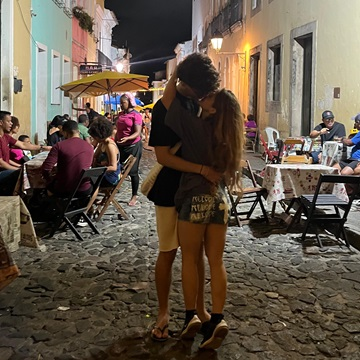

Fiquei todo esse tempo preparando esse site para você! Ele pode parecer meio capenguinha, mas foi muito difícil de fazer e foi fruto de muito esforço, tive que ver muitas aulas e aprender coisas novas nessas férias só para preparar algo especial para esse pedido de namoro tão esperado. Enfim, dividi esse site em 7 partes, e essa é uma delas, onde eu fiz esses slides com as poucas fotos que eu tenho nossas e explico como todas as outras funcionam.
Na segunda parte eu quis contar toda a nossa história, que ainda é um pouco curta, mas fiz pensando em todos os detalhes e descrevendo todos os meus sentimentos de uma forma que eu nunca te falei (inclusive fugi um pouco do assunto algumas vezes porque realmente escrevi todos os meus pensamentos do momento em que escrevi)
A terceira parte tem vários tópicos com razões para eu te amar, é algo meio clichê mas vamos relevar porque eu achei muito interessante de incluir nesse projeto.
A quarta parte eu coloquei várias imagens que me remetem a você instantaneamente, coisas que eu não consigo ver sem lembrar de algo que você fez.
A quinta parte é muito importante, mas também muito perigosa. É preciso usá-la com sabedoria, e provavelmente vou me arrepender de ter incluído ela aqui. Nessa etapa, existirão alguns vales que você poderá utilizar quando quiser, PORÉM, tenho que arrumar alguma forma de contabilizar os vales já utilizados, por que obviamente eles não são infinitos e só podem ser utilizados uma única vez. Existem alguns que realmente valem muito a pena.
A sexta parte foi pensada quando você falou que eu sou ruim de atitude para sair, então criei uma lista de coisas para a gente fazer aqui em Aracaju sempre que tiver em dúvida. A partir desse momento, todas as coisas que a gente escolher fazer e já estiverem na lista, a ideia foi minha, os créditos são meus.
A sétima e última parte é a que mais deu trabalho. Nela, eu fiz um...